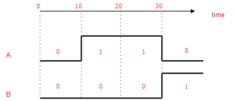
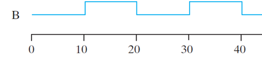
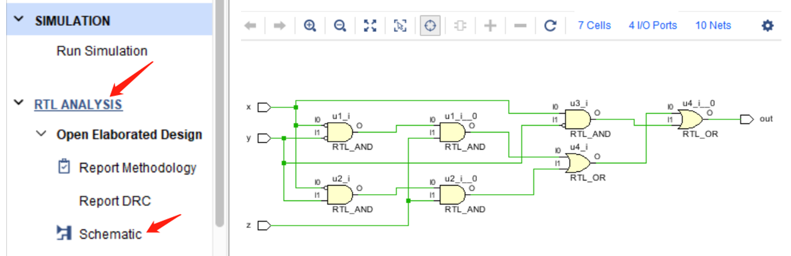
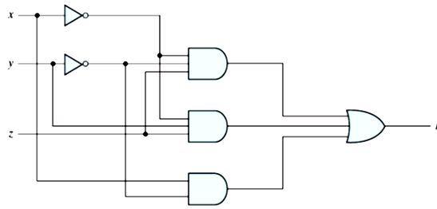
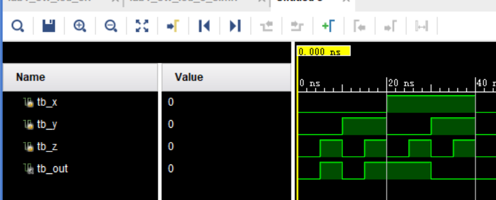

数字逻辑：Verilog基础与结构化建模
实验目标
- 掌握 Verilog HDL 的基本语法（标识符、数字表示、关键字等） 。
- 掌握 Verilog 模块（module）的结构定义及端口声明 。
- 了解基础数据类型（wire 和 reg）的使用场景 。
- 掌握门级原语（Primitives）的结构化建模方法 。
- 熟悉 Testbench 的基本结构并进行简单激励仿真 。
1. Verilog 基础语法
1.1 概述
- Verilog 是一种区分大小写（Case sensitive）的语言 。
- 其语法基础借鉴了 C 语言（Based on the programming language C） 。
1.2 注释与符号
- 单行注释：使用
//。 - 多行注释：使用
/* ... */。 - 分隔与结束：列表元素使用逗号
,分隔，语句结束使用分号;。
1.3 标识符 (Identifiers)
- 标识符用于给寄存器、函数或模块等对象命名，以便在代码中引用 。
- 必须以英文字母或下划线 (
a-zA-Z_) 开头 。 - 后续字符可以包含英文字母、数字、下划线以及美元符号 (
a-zA-Z0-9_$) 。 - 标识符最大长度可达 1024 个字符 。
- 标量示例：
A,CO,my_clk,a_1。 - 向量示例：
sel[0:2],f0[0:5],ACC[31:0]。
1.4 数字表示 (Numbers)
- 语法格式：
<size>'<radix><value>。 - 基数 (Radix)：
d(十进制)，b(二进制)，o(八进制)，h(十六进制) 。 - 二进制数值状态：包含
0,1,X/x（未知状态 Unknown），Z/z（高阻态/开路 High impedance state） 。 - 示例：
6'hCA= 6‘b0010106'hA= 6'b0010106'b1= 6'b0000014'b0101= 4'b01018'bxxxx= 8'b0000xxxx'hF= 32'b00000000000000000000000000001111 (未标记size，默认32位)0= 32'b00000000000000000000000000000000 （未标记size和radix，默认32位10进制数）
1.5 关键字 (Keywords)
- 关键字是语言中保留的特殊标识符，用于定义语言结构，全部使用小写 。
- 常见关键字包括：
module,endmodule,input,output,wire,tri,reg,assign,initial,always,begin,end。 - 门级原语关键字 (Primitive)：
and,nand,or,nor,xor,xnor,not,buf。
2. 模块与数据类型
2.1 模块与端口 (Module and Port)
- 模块（Modules）是 Verilog 设计的基本构建块 。
- 可以通过在其他模块中实例化（instantiating）模块来创建设计层次结构 。
- 模块名应当与文件名保持一致 。
- 端口（Ports）允许模块与其外部环境进行通信，除了顶层模块外，层级中的所有模块都有端口 。
// 方式一
module myCircuit (sw, led);
input [23:0] sw;
output [23:0] led;
assign led = sw;
endmodule
// 方式二 (可维护性更高)
module myCircuit (
input [23:0] sw,
output [23:0] led
);
assign led = sw;
endmodule
2.2 数据类型 (wire and reg)
Verilog 语言具有两种主要的数据类型 ：
- 线网型 (Nets)：表示组件之间的结构化连接（structural connections） 。
wire：普通互连线，无特殊解析功能，默认值为 'X' 。tri：当未被驱动时会上拉或下拉的网络 。- 寄存器型 (Registers)：表示用于存储数据的变量 。
reg：寄存器会存储最后一次赋给它的值，直到另一条赋值语句改变其值，默认值为 'Z' 。
3. 结构化建模（门级原语 Primitives）
门级原语是 Verilog 语言内置的基础逻辑门。
- 基本门原语：
buf,not,and,or,nand,nor,xor,xnor。 - 语法格式：
gate_operator instance_identifier (output, input_1, input_2, ...)。注意：使用primitives建模时，输出始终在端口列表的第一位，例如：
and A1 (F, A, B); // 逻辑等价于: F = AB
or O1 (w, a, b, c); // 逻辑等价于: w = a+b+c
or O2 (x, b, c, d, e); // 逻辑等价于: x = b+c+d+e
- 模块设计示例：
// 示例 F = AB + C
module test(
input A, input B, input C, output F
);
wire and1_or1;
and and1(and1_or1, A, B);
or or1(F, and1_or1, C);
endmodule
4. 仿真测试 (Test bench)
4.1 Testbench 基础
- Testbench 是一种提供给设计电路激励（stimulus）的 HDL 描述 。
- 它是一个虚拟平台，用于在真实环境前模拟并验证输入和输出 。
- 提供给被测电路的输入声明为
reg关键字，接收被测电路输出的信号声明为wire关键字 。 - 必须实例化被测模块（例如实例名
circuit1,或dut），每个模块的实例化必须包含唯一的实例名称 。
module my_hw_tb();
reg [23:0] sw_sim = 24'h00_0000;
wire [23:0] led_sim;
// 实例化单元，完成连接
my_circuit circuit1(.sw(sw_sim), .led(led_sim));
// 在此处添加激励信号...
endmodule
4.2 延时 (Delay)
- 时间尺度语法：
`timescale 1ns/1ps。 - 第一个数字指定了时间延迟的测量单位（1ns），第二个数字指定了延迟的精度（即四舍五入到 0.001 ns，即1ps） 。
- 如果未指定时间尺度，仿真器可能会显示无单位的值，或默认使用特定时间单位（通常为 1ns ） 。
- 传输延迟：使用
#符号表示，例如#10代表在1ns/1ps尺度下延迟 10 纳秒 。 - 注意：此延时仅为仿真器的模拟延时。
4.3 产生激励 (Stimuli)
- initial 块：仅在仿真开始时执行一次，在编写 testbench 时非常有用。如果存在多个 initial 块，它们会在仿真开始时全部并行执行 。
initial begin
A = 1'b0; B = 1'b0;
#10 A = 1'b1;
#20 A = 1'b0; B = 1'b1;
end

- always 块：与 initial 块不同，总是不断重复执行 。
always begin
#10 B = ~B;
end

5. 设计流程与 RTL 分析
5.1 完整的设计流程 (Design Flow)回顾
在 Vivado 中完成 FPGA 验证的标准流程 ：
- RTL Design：编写 Verilog 代码。
- Simulation：编写仿真文件验证逻辑功能。
- Synthesis：运行综合。
- IO Constraint：绑定硬件引脚。
- Implementation：运行实现。
- Generate Bitstream：生成比特流并上板验证。
本节课练习步骤1和2。
5.2 RTL 分析 (RTL Analysis)
- 通过 RTL 分析，你可以生成综合前的原理图（pre-synthesis schematic），并与你的门级设计做参考对比 。
- 操作步骤：在左侧 Flow Navigator 的
RTL ANALYSIS下，展开Open Elaborated Design，然后点击Schematic。 - 此非必须步骤，但可辅助检查你的设计是否符合预期

6. 实验练习
练习1：门级设计与仿真
-
创建vivado工程
Project_2 -
创建一个 Verilog 设计文件，保存为
structural_hw.v。 -
使用 Verilog 门级原语，以Structural design方式设计实现以下布尔函数电路 ：
A=x'y'z+x'yz+xy'

-
创建一个仿真文件，保存为
structural_hw_tb.v。实例化顶层模块（dut），添加激励，并运行仿真（Simulation）核对真值表波形 。 -
运行RTL分析（Run RTL Analysis） 。
设计文件代码参考：
module structural_hw (
input x,
input y,
input z,
output out
);
wire notx, noty, notz;
wire out1, out2, out3;
not nx(notx, x);
// Complete your code
endmodule
仿真文件代码参考：
module structural_hw_tb();
reg tb_x;
reg tb_y;
reg tb_z;
wire tb_out;
structural_hw dut (
// Complete your code
);
// create stimulis
// Complete your code
endmodule
波形图参考：

真值表：
| x | y | z | A |
|---|---|---|---|
| 0 | 0 | 0 | 0 |
| 0 | 0 | 1 | 1 |
| 0 | 1 | 0 | 0 |
| 0 | 1 | 1 | 1 |
| 1 | 0 | 0 | 1 |
| 1 | 0 | 1 | 1 |
| 1 | 1 | 0 | 0 |
| 1 | 1 | 1 | 0 |
练习2（可选）：逻辑优化与对比
- 修改你的设计实现另一个布尔函数 ：
B=xy'+x'z
-
检查仿真波形、RTL 分析原理图情况。这个电路的功能与之前的电路一致吗 ？
-
观察两者生成的硬件复杂度，哪一种实现更加经济（economical） ？